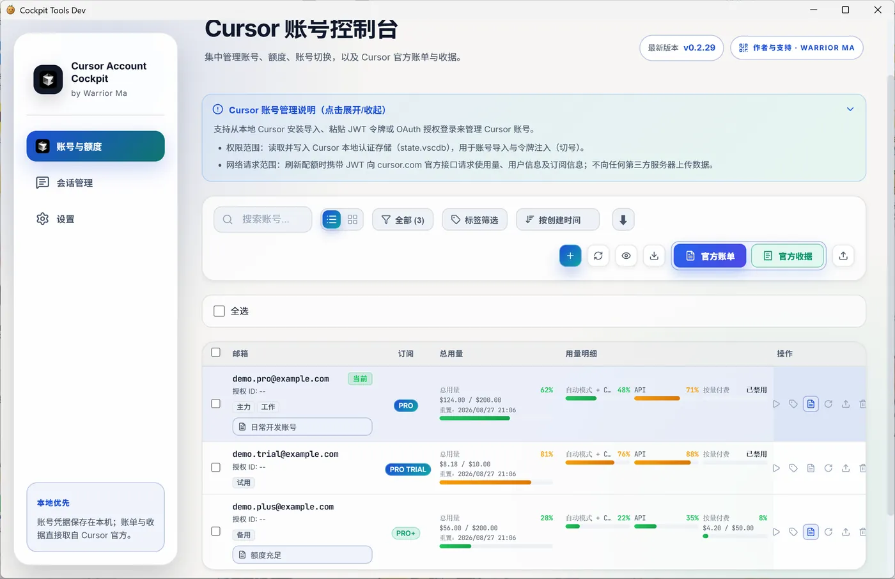
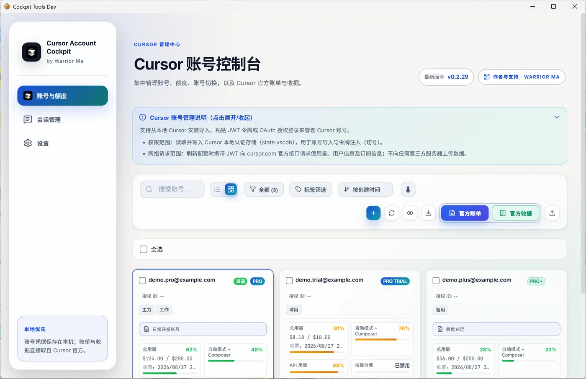
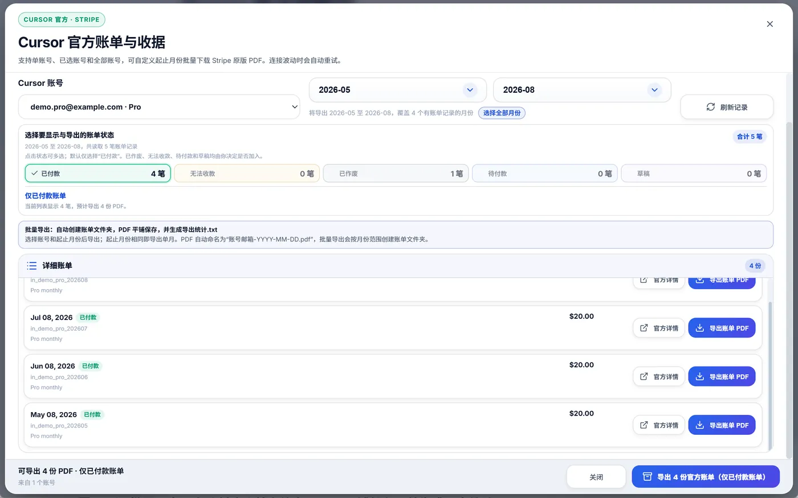
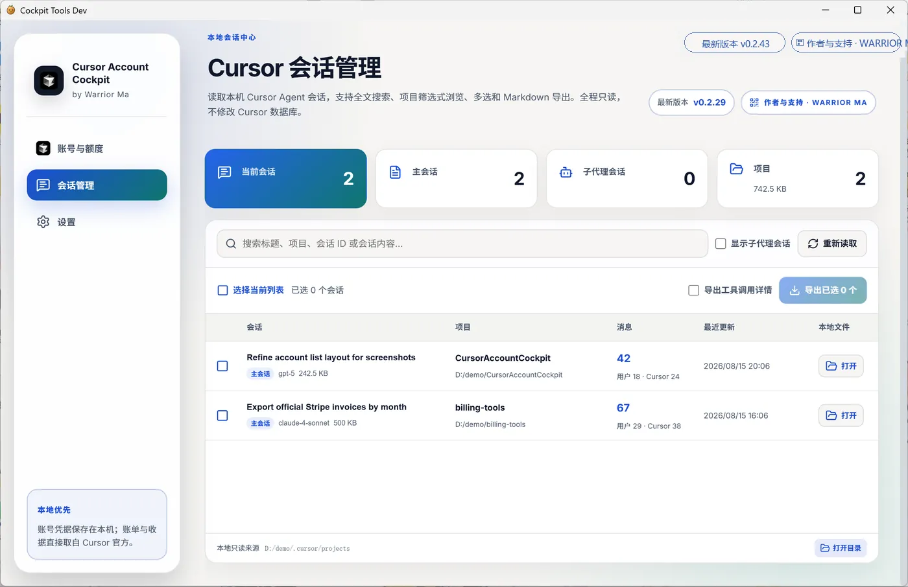

Accounts · list
Wide list with plan, usage, and actions on one row.
Local-first multi-account cockpit for Cursor
Manage accounts on your machine: quotas, one-click switching, official invoice/receipt export, and local sessions. Latest release 0.2.33.

Screenshots below are from the real app UI with demo data.
Wide list with plan, usage, and actions on one row.
Card layout for a quick scan of every account.

Filter by month and status, then batch-export Stripe PDFs.

Read-only local Agent sessions with search and Markdown export.

For questions, feedback, or collaboration, WeChat is preferred. Email works too.
Add the account and message directly — best for quick troubleshooting.
If the project helped you, Alipay tips are welcome and completely optional.